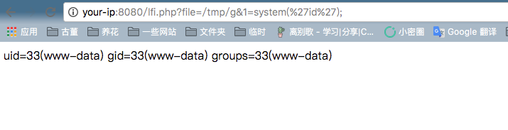

PHP Local File Inclusion RCE with PHPINFO¶
In PHP file inclusion vulnerabilities, when we cannot find a valid file to include for triggering RCE, we might be able to include a temporary file to exploit it if there exists PHPINFO which can tell us the randomly generated filename of the temporary file and its location.
Reference:
Vulnerable Environment¶
To start the vulnerable environment:
docker compose up -d
The target environment is the latest PHP 7.2, which tell us this vulnerability exists regardless of the version.
After the environment is started, access http://your-ip:8080/phpinfo.php to get a PHPINFO page and http://your-ip:8080/lfi.php?file=/etc/passwd shows there is an LFI vulnerability.
Exploit Details¶
When sending a POST request to PHP and the request contains a FILE block, PHP will save the file posted into a temporary file (usually /tmp/php[6 random digits]), the filename can be found at $_FILES variable. This temp file will be deleted after the request is over.
In the meantime, PHPINFO page prints all the variables in the context, including $_FILES. So, the temp file's name can be found in the response if we send the POST request to the PHPINFO page.
In this way, an LFI vulnerability can be promoted into an RCE without an existed useable local file.
File inclusion and PHPINFO are usually in different web pages. In theory, we need to send the filename to the file inclusion page after retrieving the it in the response of the file uploading request to the PHPINFO page. However, after the first request finishes, the file would be removed from the disk, so we need to win the race.
Steps:
- Send the file upload request to PHPINFO page with the HEADER and GET fields filled with large chunks of junk data.
- The response content would be huge because PHPINFO will print out all the data.
- PHP's default output buffer size is 4096 bytes. It can be understood as PHP return 4096 bytes each time during a socket connection.
- So we use raw socket to achieve our goal. Each time we read 4096 bytes and send the filename to the LFI page once we get it.
- By the time we got the filename, the first socket connection has not ended, which means the temp file still exists at that time.
- By taking advantage of the time gap, the temp file can be included and executed.
Exploit¶
The python script exp.py implements the above process. After successfully include the temp file, <?php file_put_contents('/tmp/g', '<?=eval($_REQUEST[1])?>')?> will be executed to generate a permanent file /tmp/g for further use.
use python2：python exp.py your-ip 8080 100:

The script success at the 189th packet, after that arbitrary code can be executed:
